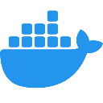
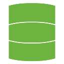

junior programmer
email : kelpucha@gmail.com
acerca de mí
Breve presentación:
Apasionado por el software, el hardware, los videojuegos, la historia y el arte. La creatividad es un pilar esencial en mi forma de ser. Me considero una persona comprometida, resiliente y siempre dispuesto a dar lo mejor de mí.
certificación
Mi crecimiento academico:
[Click card: para abrir el enlace con el acceso público a mi certificado]
Academia EDTeam: Java
Certificado en Java desde Cero en la academia EDTeam
Mi primer lenguaje de programación. Muy completo y útil para todo tipo de tareas.
CISCO:Python Essentials
Opino que es un lenguaje muy completo y estoy orgulloso de haberlo aprendido.
Oracle Cloud Infrastructure: AI Foundations Associate
Gracias a Oracle, ahora poseo un profundo conocimiento teórico de los fundamentos de la IA moderna (ML, DL, LLMs) y experiencia práctica con las herramientas de IA de Oracle Cloud Infrastructure (OCI).
Cognitiveclass.ai: SQL and Relational Databases
Certificado en SQL y bases de datos relacionales
Para manipular bases de datos relacionales y Query SQL.
También quisiera destacar y agradecer los cursos de Pildorasinformaticas, SergieCode, MitoCode, Fazt, Jey Code y entre otros por ofrecer sus servicios y brindar aprendizaje de manera gratuita.
Proyectos
Puedes encontrar más en mi perfil de GitHub.
[Click card: para abrir el repositorio Github con el código fuente]
Java API-REST


Implementación de API REST en Java y Spring Boot, con Hibernate/JPA para la persistencia de datos. La base de datos se ejecuta en un contenedor Docker, permitiendo operaciones CRUD.
Mi primer proyecto en Java en conjunto del framework Spring Boot, postgresql, postman y entre otros.
LAN chat
Aplicación de mensajería en Java, utilizando hilos para la gestión de múltiples usuarios. Incluye una interfaz gráfica con pantalla de inicio de sesión con JSwing.
No pude hacer bien el proceso de testing y bueno, lo dejo a futuro, mi primer proyecto "complejo" mientras aprendía.
Text Editor
Aplicación de escritorio creada en Java con la biblioteca JSwing.
Un editor de texto en el que estuve jugando un poco con la biblioteca JSwing.
Página Web; Historia
desarrollo de una página web de ejemplo utilizando HTML y CSS, en la que se presenta contenido histórico y cultural sobre la ciudad de Maracaibo.
Mi primera página web, respecto al lugar dónde vivo y sus origenes.
El Ahorcado
Un programa sencillo y divertido en consola para jugar con tus amigos.
Muy divertido, me moria de risa mientras lo jugaba.
Habilidades
Hablemos de lo que soy capaz


Java Standard Edition:
Algoritmos, estructuras de datos, manejo de excepciones y funciones, programación orientada a objetos y programación funcional.
Maven:
Gestión de dependencias y construcción de proyectos Java.
Spring Framework:
Manejo de Spring: para desarrollar aplicaciones Java de forma modular y eficiente. Spring Boot: simplifica la creación de aplicaciones Spring con configuraciones automáticas.
Hibernate/JPA:
Hibernate: herramienta ORM que facilita la interacción entre objetos Java y bases de datos. JPA: especificación estándar para el manejo de datos persistentes en Java.
Python:
Algoritmos, pensamiento analítico, manejo de excepciones y funciones, programación orientada a objetos.
Django:
Framework para un backend robusto para sistemas escalables.
Jupyter:
Desarrollo de software en entorno controlado e interactivo. Preciso para el analisis de datos.
 Fundamentos
en IA:
Fundamentos
en IA:
Conocimientos sobre conceptos fundamentales en Large Language Models, Machine Learning y Deep Learning en IA
 Ciencia de Datos/Data Science:
Ciencia de Datos/Data Science:
Enfoque científico para extraer conocimientos y patrones de grandes volúmenes de datos. Conocimiento en áreas específicas para transformar datos brutos en información útil para optimizar la toma de desiciones y hacer predicciones.
HTML/CSS:
De ejemplo tienes la página que estás viendo :)
 SASS:
SASS:
Para extender las capacidades de CSS para obtener un frontend más organizado.
Git/GitHub:
Gestión del código fuente, manejo de versiones y respaldo seguro de proyectos en la nube.
Bash Script:
Automatización de tareas mediante scripts.

 MySQL/PostgreSQL/DBeaver:
MySQL/PostgreSQL/DBeaver:
Para el manejo de información en bases de datos relacionales.
Docker:
Uso de contenedores para garantizar la portabilidad del código entre distintos entornos sin necesidad de configuraciones adicionales.
Idiomas:
Inglés:
Me desenvuelvo con cierta fluidez como segunda lengua. Poseo competencias para comunicarme, comprender, leer y redactar con hablantes nativos.